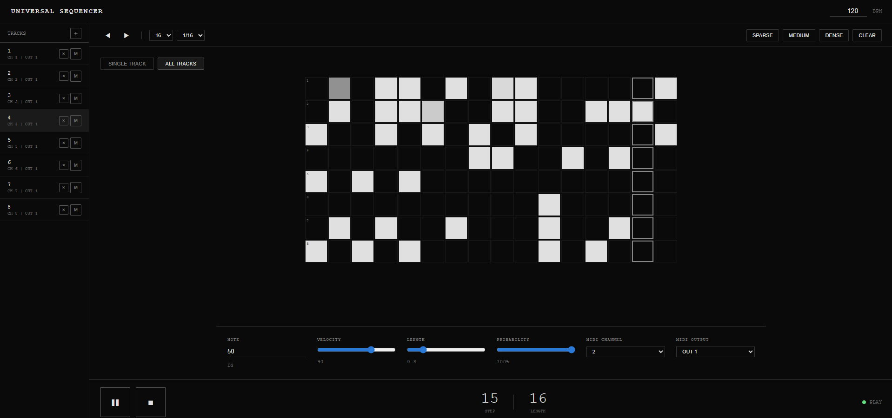
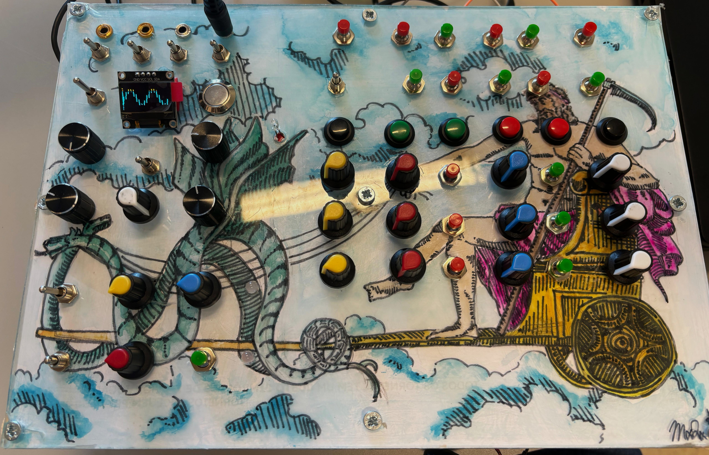

VÆTTIR is a multi-voice drone synth driven by chaotic modulation
(Lorenz-style attractors, internal patching, unstable detune).
Built for long, slowly shifting tones that sit somewhere between
harmony and system failure.
Multiple detuned voices blended into a dense drone field.
Internal patchbay for routing chaos to stutter, filter and pitch.
Designed for durational performances and evolving textures.

ESP32 Web Sequencer
ESP32 · CV / Gate / MIDI · browser-based control
A hardware sequencer that exposes its brain as a web interface.
The ESP32 creates its own network, and any device connected to it
can program patterns, clock, divisions and modulation directly
from the browser.
Physical outputs for CV, Gate and MIDI Out.
Patterns edited from a responsive web UI instead of panel buttons.
A bridge between DIY hardware and network-based control.

KRONOS
Daisy Seed · monophonic drone with FX & arpeggiator
KRONOS is a monophonic drone synthesizer built around the Daisy Seed,
combining a stable core tone with internal effects and an arpeggiator.
It can stay on a single pitch for a long time, or lock into slow,
repetitive patterns that shift with small parameter changes.
A Daisy-based drone synth where each slider controls the gain of a set
of three sine waves at slightly offset pitches, centred around a note
in a given key.
The magic sits in the summing stage: voices can be simply averaged,
or wavefolded by a sine or a triangle. The wavefolding creates
rhythmic, almost percussive movement purely from the interaction of
the partials.
Each slider: a three–sine cluster around a base frequency.
A small synth focused on percussive clicks and pulses, generated from
a PWM core and shaped by a Euclidean sequencer. Instead of traditional
drum voices, it works with extremely short transients that become
texture, groove or noise depending on density.
The Euclidean engine distributes pulses across the pattern in a
generative way, making it very easy to find complex but playable
rhythms just by moving a few parameters.
PWM-based sound engine focused on clicks and ticks.
Euclidean sequencer for generative pulse distribution.
Works both as a standalone percussion voice and as a layer in tracks.
A tiny drum machine built around bytebeat formulas running on an
Arduino Nano. Instead of samples or classic drum synthesis, the
patterns emerge from bitwise operations and integer math.
The result is a crunchy, digital form of rhythm where changing a
single number can completely transform the groove. It’s closer to
live–coding on a microcontroller than to a conventional drum synth.
Pure bytebeat sound engine on an 8-bit microcontroller.
A drum machine built on the same idea as the Euclidean Click Synth,
but expanded into a full PWM drum instrument on an ESP platform.
It pushes the click engine into denser, more percussive territories.
Short pulses, accents and gaps become the main building blocks of
each pattern. The result sits somewhere between glitch drum machine
and experimental techno tool.
ESP-based PWM drum voice derived from the Euclidean click core.
Tradicional step sequencing.
Designed for sharp, percussive textures and rhythmic clicks.